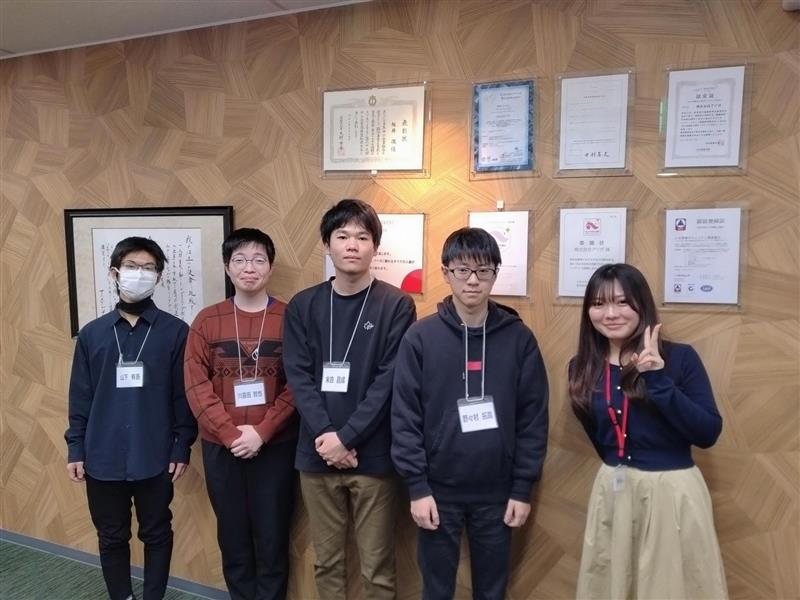

直近の活動記録

私は冬休みに、1週間の長期インターンシップに参加していた。
インターンシップ先はコミュニケーションに重きを置いている企業だ。
そこでは、コミュニケーションとは何か、そしてコミュニケーション能力を高める
ための方法とは何かについて知ることができた。
第一にコミュニケーションとは、単に人前で喋ることではない。確かに堂々と人前
で話す能力もコミュニケーションに必要だろう。しかし、一番重要なのはそこでは
ない。自分が相手に伝えることではなく、相手が伝えたいことを理解し、それに応
えることがコミュニケーション能力の最重要事項だ。